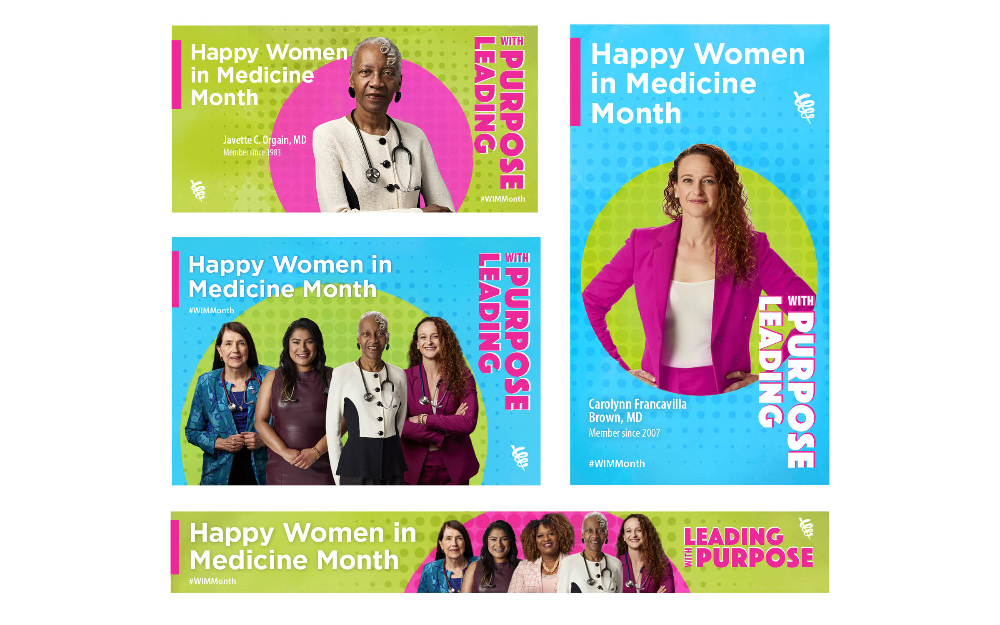
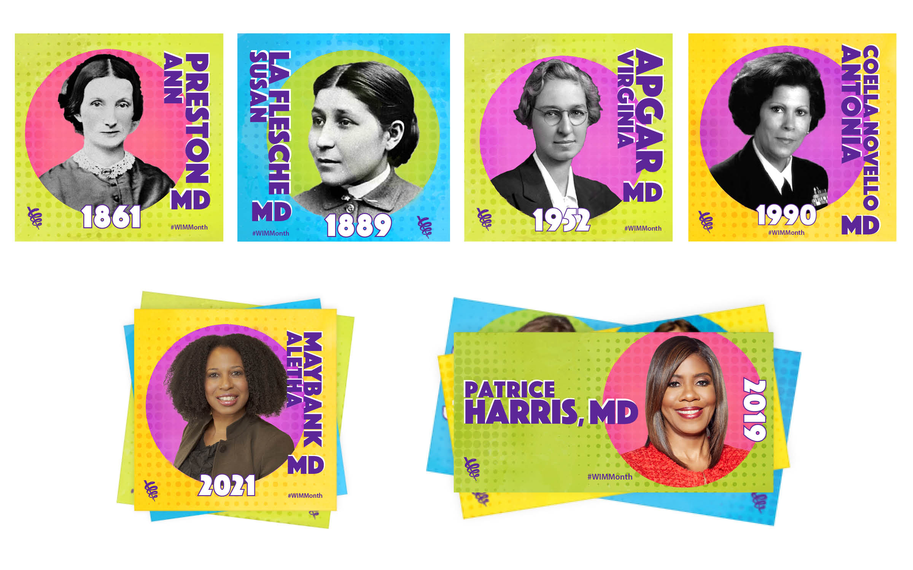
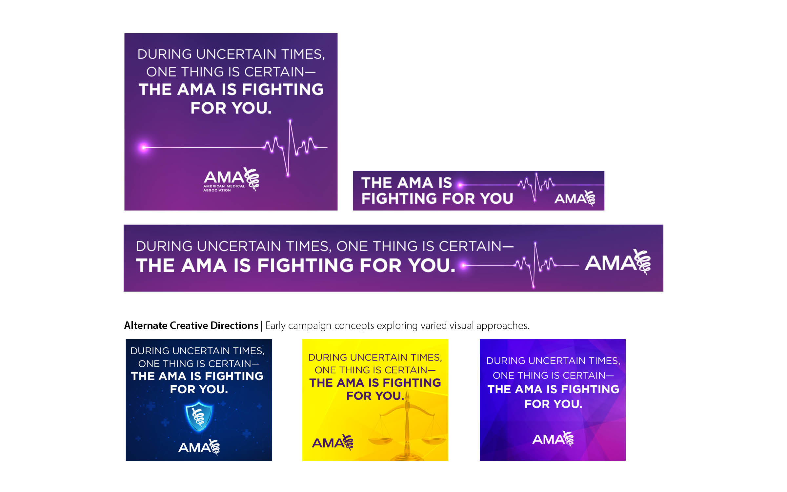
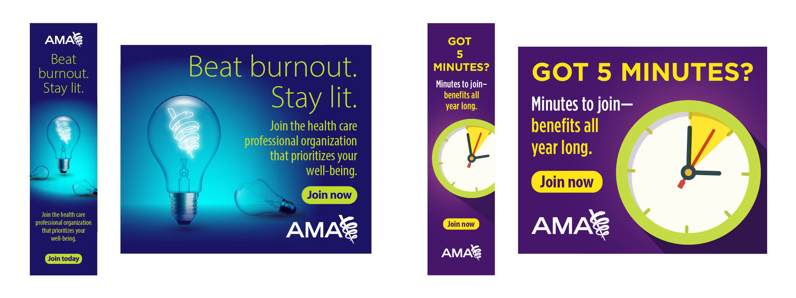
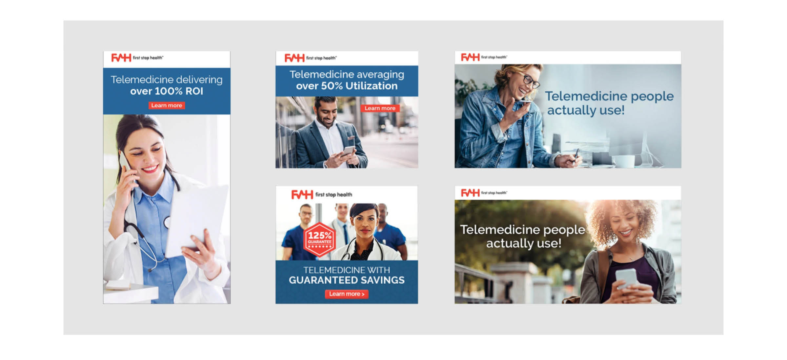
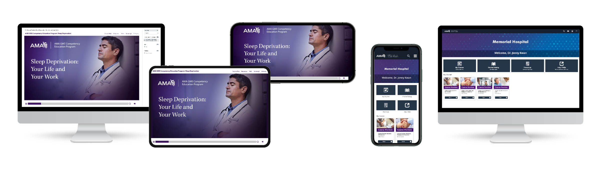

Design Lead — Brand, Digital Campaign — American Medical Association
A social media campaign celebrating Women in Medicine Month, designed and produced end to end. Portrait-driven assets put individual physicians front and center, each one personalized while remaining part of a unified visual system. A companion series honored women physicians through history, with a related but distinct treatment that extended the campaign across time.
Campaign assets designed by Julie Risko Neely. Video production by the AMA video team.


A companion series honoring women physicians through history.
Additional Digital Campaigns

Developed a digital campaign targeting physicians that reinforced the AMA's role as a trusted advocate for the profession. Designed to convey stability, credibility and professionalism, resulting in a 0.95% click-through rate, nearly three times the AMA average.

Display advertising designed to re-engage prospective members. Copy by Christian Racoma.

First Stop Health — Digital ad campaigns spanning both sides of the market. Consumer-facing creative to drive member engagement, and B2B campaigns targeting HR and benefits decision-makers at prospective employer partners.

UME Curricular Enrichment Program (UCEP) — Product graphics for a series of online educational modules helping medical schools modernize their curricula.